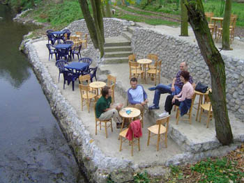

Kafa i društvo
Kad idem ujutro na posao, ili se sa njega vraćam, ili slučajno izađem tokom radnog dana, i vidim kafiće pune ljudi, kafa, kiselih voda i cigara, to mi je malo bezveze, posebno cigare i to blejanje. Ali, kao i sa većinom stvari koje nas nerviraju, to je zato što smo to nešto potisnuli (akka, više ne pušim).
Sad volim kafu na Gracu, vikend, ujutro, turska kafa bez šećera, ratluk, voda, sve zajedno po ceni od nekih 25-30 dinara, u kafanama koje se zovu ili 'Opanak' ili 'Srpski opanak' ili 'Kriva vrba' ili već nešto srodno, lokalno. Ali, dan ne počinjem bez kafe, ta činjenica ostaje.
Istraživanje pokazuje da to isto radi 78 posto Srba, kao i dve trećine Francuza i Amerikanaca. u ovo istraživanje bilo je uključeno 5806 ljudi iz SAD, Velike Britanije, Hong Konga, Singapura, Srbije, Maroka i Australije. Nasuprot našim visokim procentima, samo 21 posto ljudi u Hong Kongu dan počinje kafom. Naravno, zato što oni piju radije čaj. I zanimljiv podatak vezan za tzv. 'kulturu kafe' i priču sa početka:
"Finally, it seems that 'coffee culture' as typified (or perhaps accelerated) by popular American sitcoms is very much alive and well in the markets surveyed.
Unsurprisingly, 78 percent of respondents overall prefer to buy coffee from a café that has an inviting atmosphere. Moreover, four out of five Serbians, two thirds of Moroccans and nearly two thirds of the French say that the main reason for going to a coffee chain shop or café is to hang out with friends, rather than for the coffee itself."
***
A sad malo i o tranziciji i kafeima (Nastavak ove priče, na neki način).
Svojevremeno sam za urbanu sociologiju pisala rad o kafićima i esej je počeo time da ih suviše volim da bih baš bila objektivna. Te sam bar iskoristila priliku da citiram sve koji mi se svidjaju. Rad je bio na engleskom, te tako i prenosim jedan deo koji mi je zanimljiv, zbog onoga što je pisala Slavenka Drakulić na ovu temu:
Slavenka Drakulic gave title Cafe Europa to her book aimed at describing life after communism in Eastern/Central Europe. In the interview to ‘Voice of America’ (21. March 1997) she said that the reality of post-communist societies may be understood through anecdote and succession of everyday events, and that she wanted in the book to show how ordinary people think, what they are satisfied or unsatisfied with. In the first chapter she explains that this reality, among other things, consists in giving western names to cafes and other services (shops and boutiques, for example).
"On the surface, this practice seems merely a trick to attract customers. But it has a deeper significance in that it symbolizes how people in these countries see themselves - or rather, where they would like to see themselves. Nowadays, across Eastern Europe, revolution no longer consists of introducing democracy and a free-market economy; this has already happened. It might not work as was expected, but it is there nonetheless. Instead revolution is seen in small, everyday things: sounds, looks and images. Foreign names are an excellent shorthand for conveying the message of this revolution. Simply by using such a name, you are presenting not only an image, but a whole system of values, too. They also reveal a longing, a desire to belong to a preconceived idea of Western Europe. At the same time they serve as a kind of barrier, because they seek to deny the old communist Eastern Europe."
***
Ok, od tada je neko vreme prošlo, ima skoro decenija, pa su 'Krive vrbe' i sl. mozda postale rasprostranjenije. A može i kafa pod maslinom. Može?
Komentari
 kiko | 23.11.06 15:21
kiko | 23.11.06 15:21
ali zato kad smo se vratili u prestonicu, Biskek, u prvom kaficu smo popili po dva dupla espressa
Ljube | 24.11.06 08:33
etotako | 24.11.06 18:17
Pridruzujem se kafopijama. Za mene filter rulz. I kapucino, nista bez penice.
 RSS feed
RSS feed
 sadržaji se objavljuju pod
sadržaji se objavljuju pod
Kafa svuda!! Mmmm, i miris, i šoljice, i kašičice...